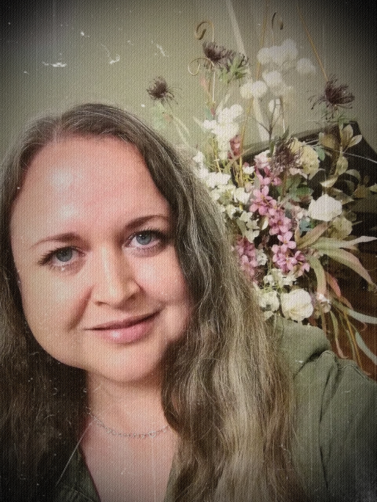

На главную
Практическое Задание №1
Немного о себе

Всем ПривеT 🖖
Я - Марина и я алкоголик =>Всегда так и тянет сказать, когда возникает необходимость
случайного знакомства))
Давай заново)) Я Марина! И я хочу качественно изменить свою жизнь))
Несколько рандомных фактов про меня
- Сова, натуральная, капитальная, 100%-ая 🦉
- 10+ лет работала проектантом в судостроении
- Люблю море🥰
- Есть две лапочки Хонды 🏍
- И три котэ😻
- Люблю работать из дома
- Хотя дома у меня нет 🤣
Любимые цитаты
- У некоторых людей есть крыло любви, у некоторых крыло свободы - но ни те, ни другие не могут летать.. Нужны
оба крыла.
ОШО
- Пока не пусто в бензобаке - На моем лице улыбка)))))))(с)
- «Какое наслаждение уважать людей» А.П.Чехов
- "Как же ты меркантилен, мой друг. Запомни: всё, что можно купить за деньги — уже дёшево!" (с)
- "Кораблю безопасней в порту, но он не для этого строился." Грейс Хоппер
Ссылка на телеграмм